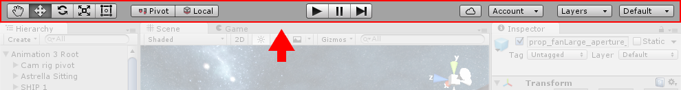

Learning the interface
Take your time to look over the editor interface and familiarize yourself with it. The main editor window is made up of tabbed windows which can be rearranged, grouped, detached and docked.
This means the look of the editor can be different from one project to the next, and one developer to the next, depending on personal preference and what type of work you are doing.
The default arrangement of windows gives you practical access to the the most common windows. If you are not yet familiar with the different windows in Unity, you can identify them by the name in the tab. The most common and useful windows are shown in their default positions, below:

The Project Window

The Project Window displays your library of assets that are available to use in your project. When you import assets into your project, they appear here. Find out more about the Project Window.
The Scene View

The Scene View allows you to visually navigate and edit your scene. The scene view can show a 3D or 2D perspective, depending on the type of project you are working on. Find out more about the Scene View and the Game View.
The Hierarchy Window

The Hierarchy Window is a hierarchical text representation of every object in the scene. Each item in the scene has an entry in the hierarchy, so the two windows are inherently linked. The hierarchy reveals the structure of how objects are attached to one another. Find out more about the Hierarchy Window.
The Inspector Window

The Inspector Window allows you to view and edit all the properties of the currently selected object. Because different types of objects have different sets of properties, the layout and contents of the inspector window will vary. Find out more about the Inspector Window.
The Toolbar

The Toolbar provides access to the most essential working features. On the left it contains the basic tools for manipulating the scene view and the objects within it. In the centre are the play, pause and step controls. The buttons to the right give you access to your Unity Cloud Services and your Unity Account, followed by a layer visibility menu, and finally the editor layout menu (which provides some alternate layouts for the editor windows, and allows you to save your own custom layouts).
The toolbar is not a window, and is the only part of the Unity interface that you can't rearrange.
Find out more about the Toolbar.